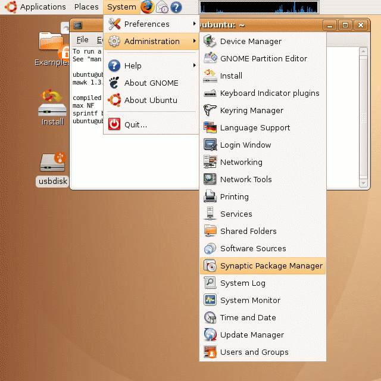
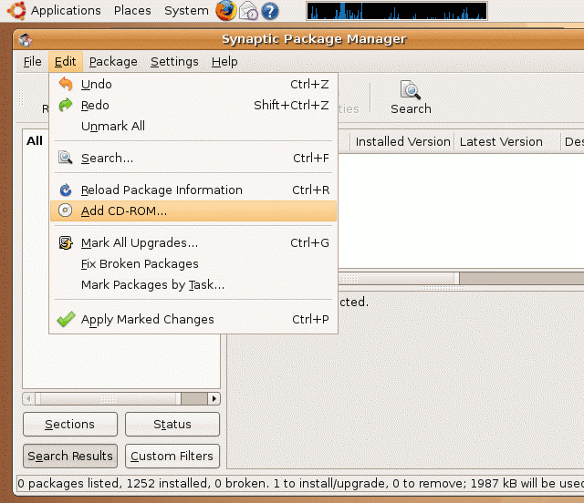
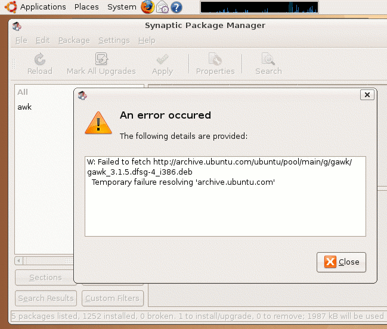
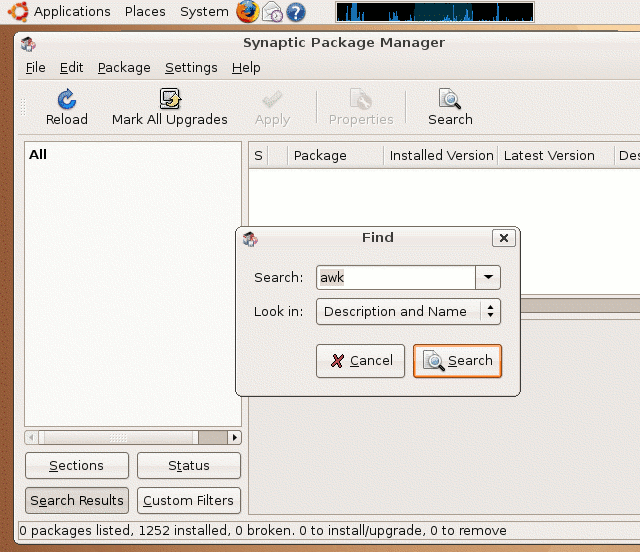
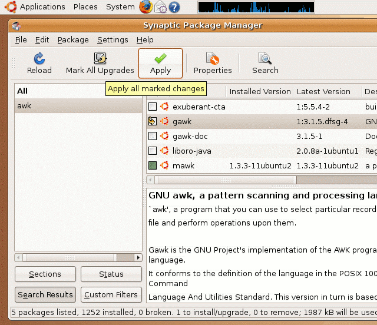
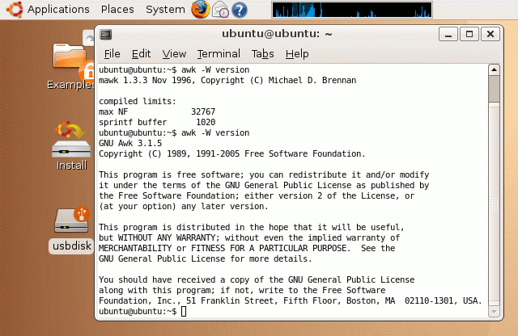

| vlsitechnology.org /Live CD help /gawk & awk | |
gawk and awk | |
Linux help
Windows help
Linux Live CD
Find out which variant and version of awk is being used by the command
$ awk -W version |
If, as on the right, it is mawk then gawk must be installed. The installation of gawk also changes awk to be gawk.
The commands are entered into a terminal window. See the terminal help page to find how to open a terminal window.
Software installation is done with the Synaptic package manager. This is the equivalent of the Windows Add Remove Software in the Control Panel.
The software is kept in repositories which can be on the web or, in our case where we want a self contained installation, on the CDROM.

gawk is present on the CDROM used to boot the computer with Ubuntu but is not installed. Installed here means loaded into RAM memory and not onto the hard disk, which remains untouched by the Live CD.
With the Ubuntu 7.04 Feisty Frolic Live CD, the CDROM repository is on the add software search path. However, with the earlier 6.10 Edgy Egg, by default Synaptic is set up to find new software from external repositories (collections of Ubuntu compatible software) and not from the CDROM.
The screenshot on the right shows how to add the CDROM to the package search path.

If the CDROM is not on the search path and there is no connection to the internet, then trying to install gawk will give an error like the screenshot on the right.

Click on Search and search for awk as shown in the screenshot on the right.

The search results for awk show all programs with the string awk in the name or description. mawk is marked as already installed, while gawk not. Select gawk and click thru on Apply and this will install gawk.

The installed variant and version of awk can be checked as before with the command
$ awk -W version |
After a successful gawk installation there will be a screenshot similar to the one on the right.
